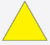
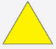

Alarm wizualny
| Ogłoszenie Alarmu: | Odwołanie Alarmu: |
|||||||
|---|---|---|---|---|---|---|---|---|
| Znak żółty w kształcie trójkąta lub w uzasadnionych przypadkach innej figury geometrycznej. | --------------------- |
|||||||
|  | --------------------- |
 Moje Bezpieczeństwo
Moje Bezpieczeństwo| Ogłoszenie Alarmu: | Odwołanie Alarmu: |
|||||||
|---|---|---|---|---|---|---|---|---|
| Znak żółty w kształcie trójkąta lub w uzasadnionych przypadkach innej figury geometrycznej. | --------------------- |
|||||||
|  | --------------------- |